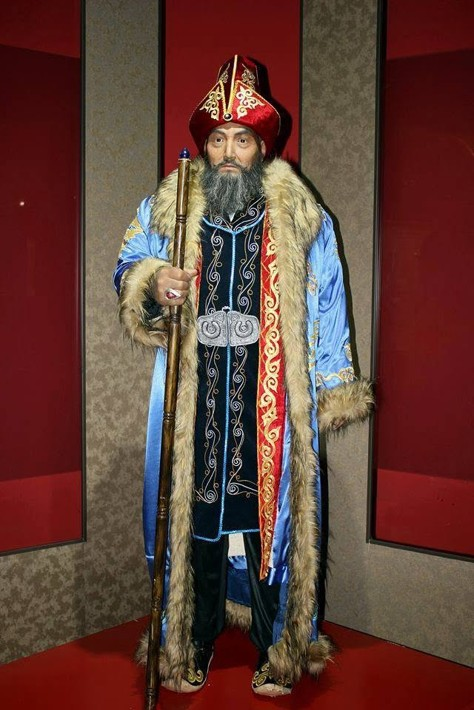
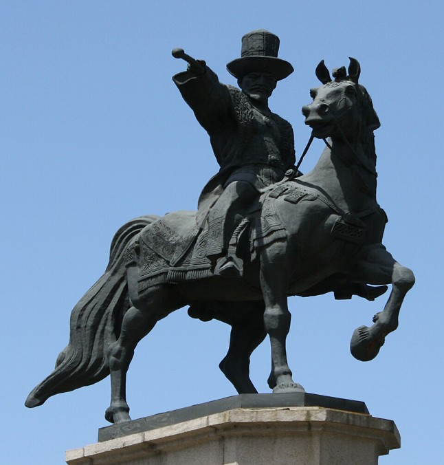
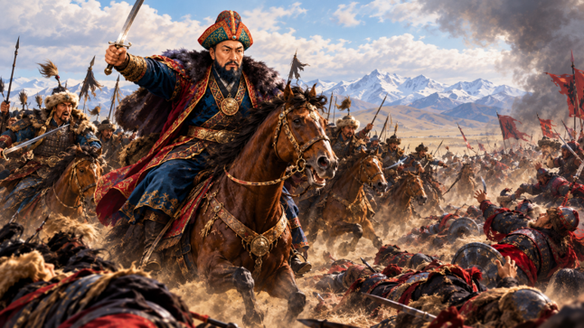

Абылай хан мүсінінің ерекшелігі мен жасалу тарихы. Материалы: Көпшілік бұл туындыларды балауыздан жасалған деп ойлайды, бірақ автор (Айдос Есмағамбетов) мәліметінше силикон, шыныпластик және арнайы заманауи материалдарды қолданады. Силикон балауызға қарағанда төзімді, температура өзгерісіне бұзылмайды және адам терісінің құрылымын, түсін дәл беруге мүмкіндік береді. Зерттеу процесі: Абылай ханның мүсінін жасау (алғашқы нұсқалары 2011–2013 жылдары басталған) үлкен ғылыми дайындықты талап етті. Автор Алматыдағы Орталық музейдегі антропологтар қалпына келтірген ханның бас сүйек нұсқасымен танысып, оның бойы, мінез-құлқы туралы деректер жинаған. Хан киімінің матасы мен ондағы ерекше ою-орнақтарға дейін тарихшылармен ақылдаса отырып әзірленген. Хирургиялық дәлдік: Гиперреализм бағытында әрбір деталь — көздің қарашығы, беттегі әжімдер, сақал-мұрттың әр тал талшығы қолмен иненің көмегімен қондырылады, бұл өте үлкен шыдамдылықты қажет етеді.
Толық оқу (Facebook)
Абылай хан ескерткіші. Алматы-2 теміржол вокзалының алдындағы алаңда бой көтерген Абылай хан ескерткіші — қаланың басты сәулеттік әрі тарихи нысандарының бірі. Бұл монумент қала қонақтарын қарсы алатын Алматының өзіндік визит картасына айналған. Ашылуы: Ескерткіш 2000 жылдың 16 желтоқсанында Қазақстанның Тәуелсіздік күніне орай салтанатты түрде ашылды. Оның ашылу рәсіміне Қазақстанның Тұңғыш Президенті қатысқан. Авторлары: Монументтің авторлық ұжымы өте мықты. Бас мүсіншісі — белгілі шебер Нұрлан Далбай (ол Алматыдағы Тәуелсіздік монументі авторларының бірі). Сәулетшілері — Ш. Валиханов, А. Ордабаев, Б. Фабричный және С. Фазылов. Композициясы: Абылай хан тұлпар үстінде, асқақ бейнеде бейнеленген. Ханның оң қолында билік пен бірліктің символы — асатаяқ бар. Мүсіншілер ханның айбындылығы мен сабырлылығын, ел қорғаған көшбасшылық мінезін дәл бере білген. Материалы мен өлшемдері: Атты мүсін таза қоладан құйылған. Ол қызыл гранитпен қапталған өте биік әрі зәулім тұғырда орналасқан. Тұғырдың төрт жағында Қазақ хандығының бірлігін білдіретін түрлі тарихи рельефтік белгілер мен ою-орнақтар қашалған.
Толық оқу (Wikipedia)
Абылай ханның (Әбілмансұр) қазақ әскерін бастап, жоңғар шапқыншылығына қарсы жүргізген шайқастары — қазақ тарихының ең даңқты беттерінің бірі. Ол жас кезінен-ақ ерен ерлігімен көзге түсіп, кейіннен бүкіл қазақ қолын біріктірген дарынды қолбасшыға айналды. Абылай хан бастаған негізгі шайқастар мен әскери кезеңдер: Шарышпен жекпе-жек және «Абылай» ұраны (1730-жылдар) Абылайдың тарих сахнасына шыққан алғашқы үлкен ерлігі жоңғарлармен болған ірі шайқастардың бірінде (тарихи деректерде Аңырақай шайқасы тұсында делінеді) көрініс тапты. • Ерлігі: Шайқас алдындағы дәстүрлі жекпе-жекке жоңғар жағынан бас қонтайшы Қалдан Сереннің жақын туысы, атақты әскербасы Шарыш шығады. Қазақ тарапынан «Сабалақ» деген атпен белгісіз болып жүрген 20 жасар Әбілмансұр суырылып шығып, атасының аруағын шақырып, «Абылайлап!» ұрандап жауға шабады. • Нәтижесі: Шарыстың басын кесіп, қазақ әскеріне үлкен жігер береді. Осы шайқастан соң ол жалпыхалықтық құрметке ие болып, есімі Абылай хан деп аталып кетті.